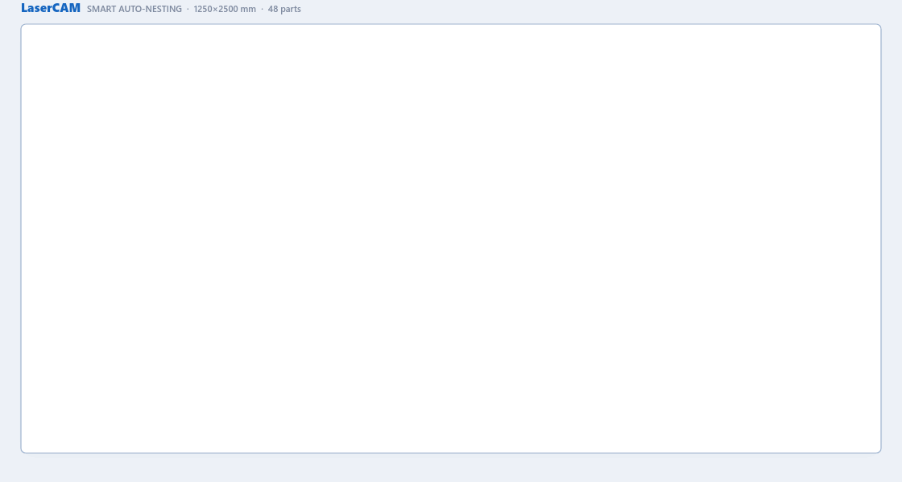

How it works
1. Send or export

2. Nest on the sheet

3. Save to Odoo or import the ZIP

This module links any Bill of Materials to LaserCAM, a web-based nesting tool for flat parts cut from a sheet or a roll. Send one or many BOMs, lay the parts out on the raw material, and write the result back: component quantities (kg incl. cutting waste), parts-per-sheet and the cutting time land directly in the BOM and its cutting operation — no duplicates, no manual field mapping. Parts that do not exist in Odoo yet become new products with their own BOM, operation and DXF attachment.
Not only laser. The same workflow fits plasma and waterjet cutting, CNC routers (wood, plastics, composites), textile and leather cutters (garments, upholstery, footwear), foam, glass, rubber gaskets and packaging — any shop that turns a DXF and a sheet into parts.

48 parts from several BOMs placed one by one on a 1250×2500 mm sheet.
Select several BOMs and send them together. Different products share the same sheet: large parts go first, small ones fill the gaps around them, and parts with matching edges interlock. A product marked Fill the sheet gets its own full sheets; the rest are combined on shared sheets. Optimize all runs every product through the layout variants in turn and keeps the best one automatically.
Because a shared sheet has one cutting time and one weight, LaserCAM splits them back per product in proportion to each part's cut length and area. Every BOM receives its own true kg and minutes, even when it never had a sheet to itself.
On Odoo 11.0 and newer, Action → LaserCAM → Send directly to LaserCAM opens the nesting tool in a new tab with the selected BOMs, their work centers and the attached DXF files already loaded. Nothing to download, nothing to upload. Each job uses a one-time token; the module never stores your LaserCAM data.
When the layout is ready, Save to Odoo in LaserCAM writes the result
back through the same connection: component kg, parts-per-sheet and cutting
time per BOM. If a BOM has no laser work center yet, the module creates one
(Laser <code>) with its operation, copying the cost per
hour from your previous work center. Direct write-back is a LaserCAM Pro
feature; the ZIP round-trip below is free.
Drop DXF files that Odoo does not know yet next to the exported BOMs. LaserCAM nests them together with the existing parts and, on save, the module creates everything the new part needs in Manufacturing:
Laser <code> and its routing operation with the nested cycle time.
A DXF that holds several different shapes can be split in LaserCAM into
separate products (<code>-1, <code>-2, …)
before saving. Product creation works through Save to Odoo and through
the fixes ZIP, so it is available on every supported version, 9.0 included.
One click on Action → LaserCAM → Export downloads a single ZIP containing everything the nester needs: BOM line ids and quantities, the sheet component, the routing operation and the work-center capacity & cycle time. If a DXF is attached to the product, it travels inside the ZIP too, so the part geometry loads automatically. Works on every version from 9.0.
Drop the lasercam_fixes.zip LaserCAM produces back onto
Action → LaserCAM → Import result. The module updates the
component quantity, parts-per-sheet and the sheet cutting time in place,
creates missing laser work centers and operations, and creates the new
products with their DXF files from the same ZIP.
1. Send or export
2. Nest on the sheet
3. Save to Odoo or import the ZIP
Laser <code> by default; rename it to match your machine.proxy_mode = True and check that web.base.url starts with https:// — the direct connection is opened from LaserCAM back to your Odoo.Questions or a version quirk? Email info@ucase.eu.